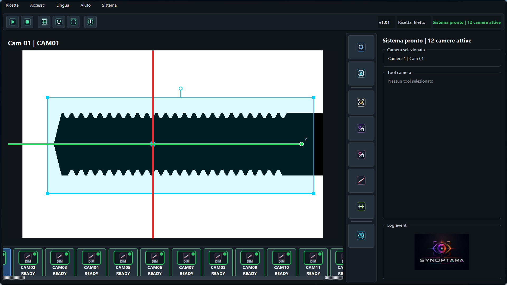

Controllo visivo unificato
L'interfaccia utente di SYNOPTARA.
Un ambiente operativo scuro, minimale e ad alte prestazioni progettato per la conduzione dell'impianto e il collaudo rapido dei controlli di visione.

Interfaccia live
HMI · Monitoraggio · Analisi
Funzionalità chiave
Progettata per l'operatore e il collaudatore
L'HMI di SYNOPTARA separa chiaramente la visualizzazione dei risultati in tempo reale dalla configurazione dettagliata delle ricette, garantendo immediatezza in produzione.
01
Visualizzazione live
Feedback video immediato con sovrapposizione grafica degli esiti del controllo (OK/KO) e delle misure attive.
02
Configurazione ricette
Gestione integrata dei parametri per camera, tempi di esposizione, tolleranze geometriche e modelli AI.
03
Statistiche & Log
Monitoraggio real-time dei tempi ciclo di elaborazione, tassi di scarto e contatori totali della produzione.
04
Diagnostica di rete
Visualizzazione dello stato di comunicazione del protocollo TCP e tracciabilità dei dati inviati al PLC.